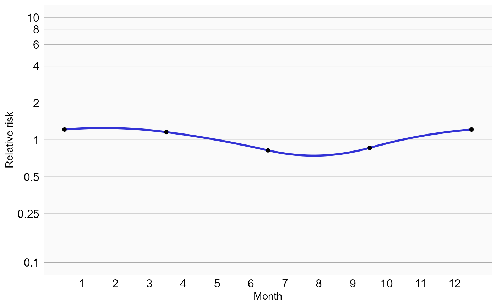
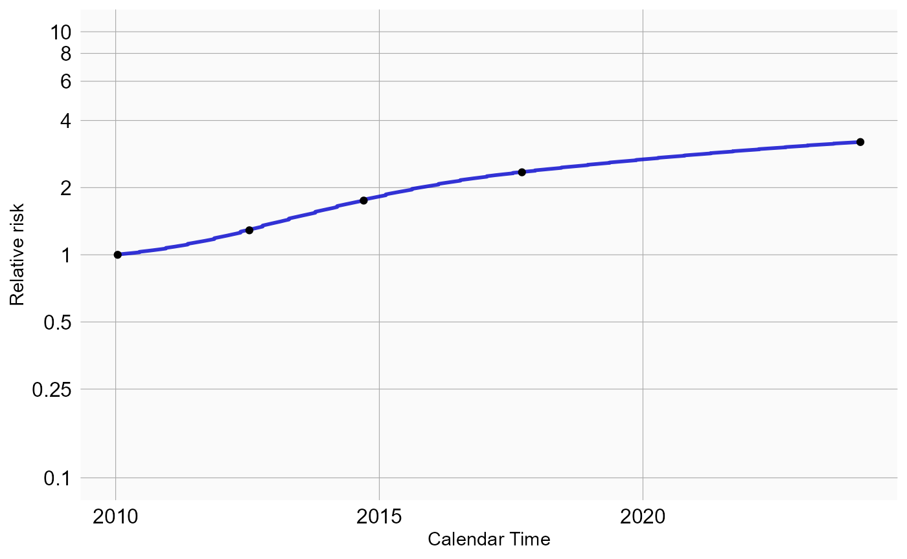
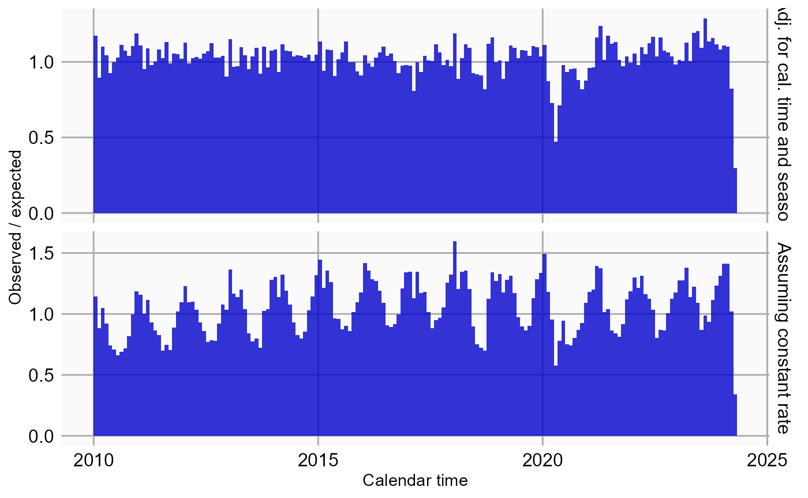
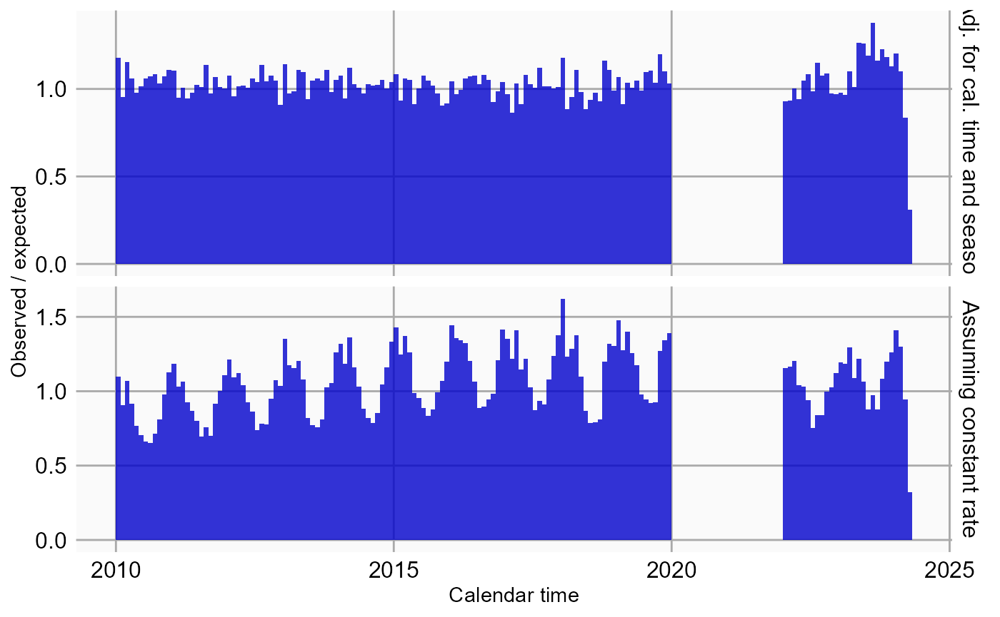
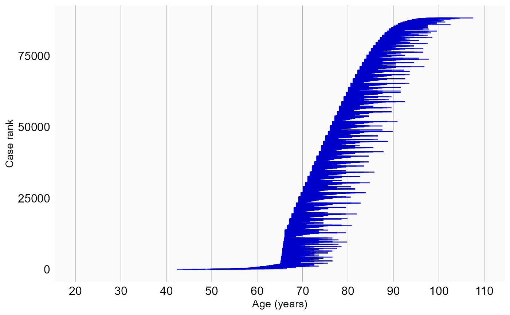
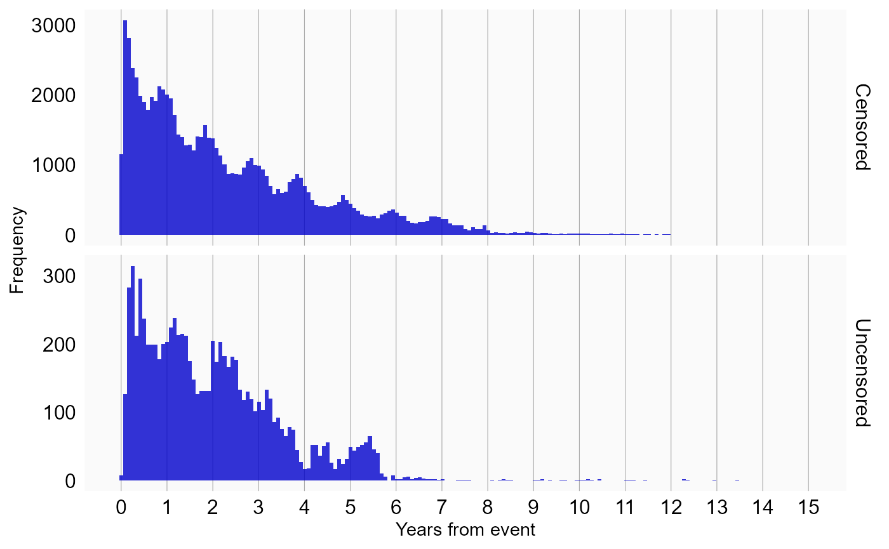
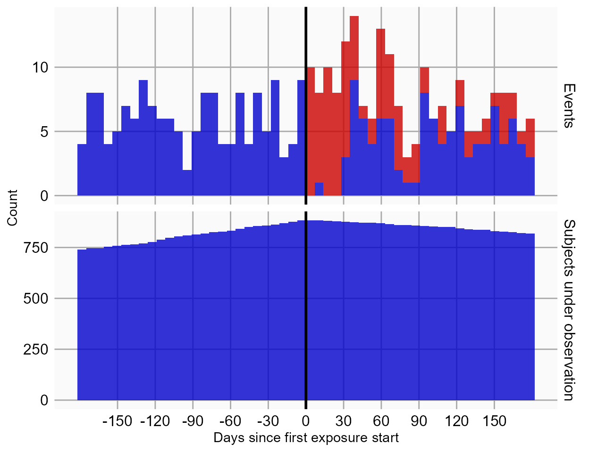

Single studies using the SelfControlledCaseSeries package
Martijn J. Schuemie, Marc A. Suchard and Patrick Ryan
2024-05-31
Source:vignettes/SingleStudies.Rmd
SingleStudies.RmdIntroduction
This vignette describes how you can use the
SelfControlledCaseSeries package to perform a single
Self-Controlled Case Series (SCCS) study. We will walk through all the
steps needed to perform an exemplar study, and we have selected the
well-studied topic of the effect of aspirin on epistaxis.
Terminology
The following terms are used consistently throughout the package:
- Case: a period of continuous observation of a person containing one or more outcomes. One person can contribute to multiple cases, for example when the person has multiple observation periods.
- Observation period: the time when a person is observed in the database, e.g. the time when enrolled in an insurance plan.
- Nesting cohort: a cohort defining when persons are eligible to be included as cases. This is typically the indication of the drug. For example, if the drug treats diabetes, we may want to nest the analysis in the time when people have diabetes to avoid (time-varying) confounding by indication.
- Study period: a period of calendar time when persons are eligible to be included as cases. For example, a study period could be January 1, 2020, onward. Unlike nesting cohorts, which could specify different time periods per person, a study period applies to all persons.
- Naive period: the first part of a person’s observation period (e.g. the first 180 days). This is typically removed from the SCCS model to avoid exposure and incident outcome misclassification. For example, if we observe the outcome on the second day of a person’s observation period, we do not know whether the outcome is a new one or just a follow-up for an old one, and whether the patient may have started the exposure just prior to observation start without us knowing about it.
- Study population: the set of cases having a specific outcome, that meet certain criteria, such as the naive period and age restrictions.
- Era: a data element extracted from the database denoting a time period for a patient (a case). This can be a cohort, but also a drug era.
- SCCS data: a data object containing information on cases, observation periods, nesting cohorts, and eras.
- Covariate: a time-varying variable used as a predictor for the outcome in the SCCS model. These include splines and era covariates.
- Era covariate: a covariate derived from an era. Multiple covariates can be derived from a single era (e.g. a covariate for when on a drug, and a covariate for the pre-exposure time prior to the drug). One covariate can be derived from multiple eras (e.g. one covariate can represent a class of drugs).
- SCCS interval data: data of cases chopped into intervals during which all covariates have a constant value. For splines (e.g for season), the effect is assumed to be constant within each calendar month.
- SCCS model: a Poisson regression of SCCS interval data, condition on the observation period.
Installation instructions
Before installing the SelfControlledCaseSeries package
make sure you have Java available. For Windows users, RTools is also
necessary. See these
instructions for properly configuring your R environment.
The SelfControlledCaseSeries package is maintained in a
Github
repository, and can be downloaded and installed from within R using
the remotes package:
install.packages("remotes")
library(remotes)
install_github("ohdsi/SelfControlledCaseSeries") Once installed, you can type
library(SelfControlledCaseSeries) to load the package.
Overview
In the SelfControlledCaseSeries package a study requires
at least three steps:
Loading the necessary data from the database.
Transforming the data into a format suitable for an SCCS study. This step can be broken down in multiple tasks:
- Defining a study population, people having a specific outcome, with possible further restrictions such as age.
- Creating covariates based on the variables extracted from the database, such as defining risk windows based on exposures.
- Transforming the data into non-overlapping time intervals, with information on the various covariates and outcomes per interval.
- Fitting the model using conditional Poisson regression.
In the following sections these steps will be demonstrated for increasingly complex studies.
Studies with a single drug
Configuring the connection to the server
We need to tell R how to connect to the server where the data are.
SelfControlledCaseSeries uses the
DatabaseConnector package, which provides the
createConnectionDetails function. Type
?createConnectionDetails for the specific settings required
for the various database management systems (DBMS). For example, one
might connect to a PostgreSQL database using this code:
connectionDetails <- createConnectionDetails(dbms = "postgresql",
server = "localhost/ohdsi",
user = "joe",
password = "supersecret")
cdmDatabaseSchema <- "my_cdm_data"
cohortDatabaseSchema <- "my_results"
cohortTable <- "my_cohorts"
options(sqlRenderTempEmulationSchema = NULL)The last lines define the cdmDatabaseSchema,
cohortDatabaseSchema, and cohortTable variables. We’ll use
these later to tell R where the data in CDM format live, where we have
stored our cohorts of interest, and what version CDM is used. Note that
for Microsoft SQL Server, ‘databaseSchemas’ need to specify both the
database and the schema, so for example
cdmDatabaseSchema <- "my_cdm_data.dbo". For database
platforms that do not support temp tables, such as Oracle, it is also
necessary to provide a schema where the user has write access that can
be used to emulate temp tables. PostgreSQL supports temp tables, so we
can set options(sqlRenderTempEmulationSchema = NULL) (or
not set the sqlRenderTempEmulationSchema at all.)
Preparing the exposure and outcome of interest
We need to define the exposure and outcome for our study. For the
exposure, we will directly use the drug_era table in the
CDM. For the outcome we can use the OHDSI PhenotypeLibrary
package to retrieve a community-approved definition of epistaxis:
epistaxis <- 356
cohortDefinitionSet <- PhenotypeLibrary::getPlCohortDefinitionSet(epistaxis)We can use the CohortGenerator package to instantiate
this cohort:
connection <- DatabaseConnector::connect(connectionDetails)
cohortTableNames <- CohortGenerator::getCohortTableNames(cohortTable)
CohortGenerator::createCohortTables(connection = connection,
cohortDatabaseSchema = cohortDatabaseSchema,
cohortTableNames = cohortTableNames)
counts <- CohortGenerator::generateCohortSet(connection = connection,
cdmDatabaseSchema = cdmDatabaseSchema,
cohortDatabaseSchema = cohortDatabaseSchema,
cohortTableNames = cohortTableNames,
cohortDefinitionSet = cohortDefinitionSet)
DatabaseConnector::disconnect(connection)Extracting the data from the server
Now we can tell SelfControlledCaseSeries to extract all
necessary data for our analysis:
aspirin <- 1112807
sccsData <- getDbSccsData(connectionDetails = connectionDetails,
cdmDatabaseSchema = cdmDatabaseSchema,
outcomeDatabaseSchema = cohortDatabaseSchema,
outcomeTable = cohortTable,
outcomeIds = epistaxis,
exposureDatabaseSchema = cdmDatabaseSchema,
exposureTable = "drug_era",
exposureIds = aspirin,
studyStartDates = "20100101",
studyEndDates = "21000101")
sccsData## # SccsData object
##
## Exposure cohort ID(s): 1112807
## Outcome cohort ID(s): 356
##
## Inherits from Andromeda:
## # Andromeda object
## # Physical location: C:\Users\admin_mschuemi\AppData\Local\Temp\2\RtmpOSkxPS\file2ed07fd0198c.sqlite
##
## Tables:
## $cases (observationPeriodId, caseId, personId, noninformativeEndCensor, observationPeriodStartDate, startDay, endDay, ageAtObsStart, genderConceptId)
## $eraRef (eraType, eraId, eraName, minObservedDate, maxObservedDate)
## $eras (eraType, caseId, eraId, eraValue, eraStartDay, eraEndDay)There are many parameters, but they are all documented in the
SelfControlledCaseSeries manual. In short, we are pointing
the function to the table created earlier and indicating which cohort ID
in that table identifies the outcome. Note that it is possible to fetch
the data for multiple outcomes at once. We further point the function to
the drug_era table, and specify the concept ID of our
exposure of interest: aspirin. Again, note that it is also possible to
fetch data for multiple drugs at once. In fact, when we do not specify
any exposure IDs the function will retrieve the data for all the drugs
found in the drug_era table.
All data about the patients, outcomes and exposures are extracted
from the server and stored in the sccsData object. This
object uses the Andromeda package to store information in a
way that ensures R does not run out of memory, even when the data are
large.
We can use the generic summary() function to view some
more information of the data we extracted:
summary(sccsData)## SccsData object summary
##
## Exposure cohort ID(s): 1112807
## Outcome cohort ID(s): 356
##
## Outcome counts:
## Outcome Subjects Outcome Events Outcome Observation Periods
## 356 99702 157218 1e+05
##
## Eras:
## Number of era types: 2
## Number of eras: 168013Saving the data to file
Creating the sccsData file can take considerable
computing time, and it is probably a good idea to save it for future
sessions. Because sccsData uses Andromeda, we
cannot use R’s regular save function. Instead, we’ll have to use the
saveSccsData() function:
saveSccsData(sccsData, "sccsData.zip")We can use the loadSccsData() function to load the data
in a future session.
Creating the study population
From the data fetched from the server we can now define the population we wish to study. If we retrieved data for multiple outcomes, we should now select only one, and possibly impose further restrictions:
studyPop <- createStudyPopulation(sccsData = sccsData,
outcomeId = epistaxis,
firstOutcomeOnly = FALSE,
naivePeriod = 180)Here we specify we wish to study the outcome with the ID stored in
epistaxis. Since this was the only outcome for which we
fetched the data, we could also have skipped this argument. We
furthermore specify that the first 180 days of observation of every
person, the so-called ‘naive period’, will be excluded from the
analysis. Note that data in the naive period will be used to determine
exposure status at the start of follow-up (after the end of the naive
period). We also specify we will use all occurrences of the outcome, not
just the first one per person.
We can find out how many people (if any) were removed by any restrictions we imposed:
getAttritionTable(studyPop)## outcomeId outcomeSubjects outcomeEvents outcomeObsPeriods observedDays
## 1 356 882260 1386052 908691 3367212134
## 2 356 779787 1221258 797988 2844636018
## 3 356 99702 157218 100000 367899811
## 4 356 89269 138585 89470 320619597
## description
## 1 All outcome occurrences
## 2 Outcomes in study period(s)
## 3 Random sample
## 4 Requiring 180 days naive periodDefining a simple model
Next, we can use the data to define a simple model to fit:
covarAspirin <- createEraCovariateSettings(label = "Exposure of interest",
includeEraIds = aspirin,
start = 0,
end = 0,
endAnchor = "era end")
sccsIntervalData <- createSccsIntervalData(
studyPopulation = studyPop,
sccsData = sccsData,
eraCovariateSettings = covarAspirin
)
summary(sccsIntervalData)## SccsIntervalData object summary
##
## Outcome cohort ID: 356
##
## Number of cases (observation periods): 3609
## Number of eras (spans of time): 7218
## Number of outcomes: 5808
## Number of covariates: 1
## Number of non-zero covariate values: 3609In this example, we use the createEraCovariateSettings
to define a single covariate: exposure to aspirin. We specify that the
risk window is from start of exposure to the end by setting start and
end to 0, and defining the anchor for the end to be the era end, which
for drug eras is the end of exposure.
We then use the covariate definition in the
createSccsIntervalData function to generate the
sccsIntervalData. This represents the data in
non-overlapping time intervals, with information on the various
covariates and outcomes per interval.
Model fitting
The fitSccsModel function is used to fit the model:
model <- fitSccsModel(sccsIntervalData)We can inspect the resulting model:
model## SccsModel object
##
## Outcome ID: 356
##
## Outcome count:
## outcomeSubjects outcomeEvents outcomeObsPeriods observedDays
## 356 3609 5808 3609 9511023
##
## Estimates:
## # A tibble: 1 x 7
## Name ID Estimate LB95CI UB95CI LogRr SeLogRr
## <chr> <dbl> <dbl> <dbl> <dbl> <dbl> <dbl>
## 1 Exposure of interest 1000 1.48 1.38 1.60 0.395 0.0378This tells us what the estimated relative risk (the incidence rate ratio) is during exposure to aspirin compared to non-exposed time.
Adding a pre-exposure window
The fact that platelet aggregation inhibitors like aspirin can cause epistaxis is well known to doctors, and this knowledge affects prescribing behavior. For example, a patient who has just had a nose bleed is not likely to be prescribed aspirin. This may lead to underestimation of the rate during unexposed time, because the unexposed time includes time just prior to exposure where observing of the outcome is unlikely because of this behavior. One solution to this problem that is often used is to introduce a separate ‘risk window’ just prior to exposure, to separate it from the remaining unexposed time. We can add such a ‘pre-exposure window’ to our analysis:
covarPreAspirin <- createEraCovariateSettings(label = "Pre-exposure",
includeEraIds = aspirin,
start = -60,
end = -1,
endAnchor = "era start")
sccsIntervalData <- createSccsIntervalData(
studyPopulation = studyPop,
sccsData = sccsData,
eraCovariateSettings = list(covarAspirin,
covarPreAspirin)
)
model <- fitSccsModel(sccsIntervalData)Here we created a new covariate definition in addition to the first
one. We define the risk window to start 60 days prior to exposure, and
end on the day just prior to exposure. We combine the two covariate
settings in a list for the createSccsIntervalData function.
Again, we can take a look at the results:
model## SccsModel object
##
## Outcome ID: 356
##
## Outcome count:
## outcomeSubjects outcomeEvents outcomeObsPeriods observedDays
## 356 3609 5808 3609 9511023
##
## Estimates:
## # A tibble: 2 x 7
## Name ID Estimate LB95CI UB95CI LogRr SeLogRr
## <chr> <dbl> <dbl> <dbl> <dbl> <dbl> <dbl>
## 1 Exposure of interest 1000 1.54 1.43 1.66 0.432 0.0385
## 2 Pre-exposure 1001 1.32 1.19 1.46 0.279 0.0531Including seasonality, and calendar time
Often both the rate of exposure and the outcome change with age, and can even depend on the season or calendar time in general (e.g. rates may be higher in 2021 compared to 2020). This may lead to confounding and may bias our estimates. To correct for this we can include age, season, and/or calendar time into the model.
For computational reasons we assume the effect of age, season, and calendar time are constant within each calendar month. We assume that the rate from one month to the next can be different, but we also assume that subsequent months have somewhat similar rates. This is implemented by using spline functions.
 Figure
1. Example of how a spline is used for seasonality: within a month,
the risk attributable to seasonality is assumed to be constant, but from
month to month the risks are assumed to follow a cyclic quadratic
spline.
Figure
1. Example of how a spline is used for seasonality: within a month,
the risk attributable to seasonality is assumed to be constant, but from
month to month the risks are assumed to follow a cyclic quadratic
spline.
Note that by default all people that have the outcome will be used to estimate the effect of age, seasonality, and calendar time on the outcome, so not just the people exposed to the drug of interest. Adjusting for age typically only makes sense for small children, where a small difference in age can still make a big difference (remember: we are modeling the effect of age in each person by themselves, not the effect of age across persons). Since age and calendar time are often hard to fit simultaneously, it is often best to only model seasonality and calendar time, like this:
seasonalityCovariateSettings <- createSeasonalityCovariateSettings(seasonKnots = 5)
calendarTimeSettings <- createCalendarTimeCovariateSettings(calendarTimeKnots = 5)
sccsIntervalData <- createSccsIntervalData(
studyPopulation = studyPop,
sccsData = sccsData,
eraCovariateSettings = list(covarAspirin,
covarPreAspirin),
seasonalityCovariateSettings = seasonalityCovariateSettings,
calendarTimeCovariateSettings = calendarTimeSettings
)
model <- fitSccsModel(sccsIntervalData)Again, we can inspect the model:
model## SccsModel object
##
## Outcome ID: 356
##
## Outcome count:
## outcomeSubjects outcomeEvents outcomeObsPeriods observedDays
## 356 13242 20596 13244 30396567
##
## Estimates:
## # A tibble: 11 x 7
## Name ID Estimate LB95CI UB95CI LogRr SeLogRr
## <chr> <dbl> <dbl> <dbl> <dbl> <dbl> <dbl>
## 1 Seasonality spline component 1 200 1.02 NA NA 0.0228 NA
## 2 Seasonality spline component 2 201 1.43 NA NA 0.359 NA
## 3 Seasonality spline component 3 202 1.00 NA NA 0.00464 NA
## 4 Seasonality spline component 4 203 0.969 NA NA -0.0319 NA
## 5 Calendar time spline component~ 300 1.13 NA NA 0.125 NA
## 6 Calendar time spline component~ 301 1.11 NA NA 0.102 NA
## 7 Calendar time spline component~ 302 1.29 NA NA 0.253 NA
## 8 Calendar time spline component~ 303 0.980 NA NA -0.0205 NA
## 9 Calendar time spline component~ 304 1.21 NA NA 0.192 NA
## 10 Exposure of interest 1000 1.54 1.43 1.66 0.431 0.0385
## 11 Pre-exposure 1001 1.32 1.19 1.46 0.278 0.0531We see that our estimates for exposed and pre-exposure time have not changes much. We can plot the spline curves for season, and calendar time to learn more:
plotSeasonality(model)
plotCalendarTimeEffect(model)
We see some effect for season: epistaxis tends to be more prevalent during winter. We should verify if our model accounts for time trends, by plotting the observed to expected rate of the outcome across time, before and after adjustment:
plotEventToCalendarTime(studyPopulation = studyPop,
sccsModel = model)
Here we see that after adjustment, in general, the rate of outcome appears fairly stable across time, with the exception of some months in 2020. This is what we refer to as the ‘COVID-blip’, because during the time of the COVID-19 pandemic regular healthcare was put on hold.
Removing the COVID blip
The discontinuity in the rate of the outcome during the COVID pandemic could cause bias. For this reason it is probably best to remove this time from the analysis altogether. We can achieve this by defining two separate study periods:
sccsData <- getDbSccsData(connectionDetails = connectionDetails,
cdmDatabaseSchema = cdmDatabaseSchema,
outcomeDatabaseSchema = cohortDatabaseSchema,
outcomeTable = cohortTable,
outcomeIds = epistaxis,
exposureDatabaseSchema = cdmDatabaseSchema,
exposureTable = "drug_era",
exposureIds = aspirin,
studyStartDates = c("19000101", "20220101"),
studyEndDates = c("20191231", "21001231"))
studyPop <- createStudyPopulation(sccsData = sccsData,
outcomeId = epistaxis,
firstOutcomeOnly = FALSE,
naivePeriod = 180)
sccsIntervalData <- createSccsIntervalData(
studyPopulation = studyPop,
sccsData = sccsData,
eraCovariateSettings = list(covarAspirin,
covarPreAspirin),
seasonalityCovariateSettings = seasonalityCovariateSettings,
calendarTimeCovariateSettings = calendarTimeSettings
)
model <- fitSccsModel(sccsIntervalData)If we plot the outcomes over time, we see the entire time of the COVID pandemic has been removed:
plotEventToCalendarTime(studyPopulation = studyPop,
sccsModel = model)
Considering event-dependent observation time
The SCCS method requires that observation periods are independent of
outcome times. This requirement is violated when outcomes increase the
mortality rate, since censoring of the observation periods is then
event-dependent. A modification to the SCCS has been proposed that
attempts to correct for this. First, several models are fitted to
estimate the amount and shape of the event-dependent censoring, and the
best fitting model is selected. Next, this model is used to reweigh
various parts of the observation time. This approach is also implemented
in this package, and can be turned on using the
eventDependentObservation argument of the
createSccsIntervalData function. However, this method has
proven to be somewhat unstable in combinations with other corrections,
so for now it is best to keep the model simple:
sccsIntervalData <- createSccsIntervalData(
studyPopulation = studyPop,
sccsData = sccsData,
eraCovariateSettings = list(covarAspirin,
covarPreAspirin),
eventDependentObservation = TRUE
)
model <- fitSccsModel(sccsIntervalData)Again, we can inspect the model:
model## SccsModel object
##
## Outcome ID: 356
##
## Outcome count:
## outcomeSubjects outcomeEvents outcomeObsPeriods observedDays
## 356 2910 4504 2923 2167829
##
## Estimates:
## # A tibble: 2 x 7
## Name ID Estimate LB95CI UB95CI LogRr SeLogRr
## <chr> <dbl> <dbl> <dbl> <dbl> <dbl> <dbl>
## 1 Exposure of interest 1000 1.47 1.35 1.60 0.387 0.0434
## 2 Pre-exposure 1001 1.42 1.27 1.58 0.348 0.0557Studies with more than one drug
Although we are usually interested in the effect of a single drug or drug class, it could be beneficial to add exposure to other drugs to the analysis if we believe those drugs represent time-varying confounders that we wish to correct for.
Adding a class of drugs
For example, SSRIs might also cause epistaxis, and if aspirin is co-prescribed with SSRIs we don’t want the effect of SSRIs attributed to aspirin. We would like our estimate to represent just the effect of the aspirin, so we need to keep the effect of the SSRIs separate. First we have to retrieve the information on SSRI exposure from the database:
ssris <- c(715939, 722031, 739138, 751412, 755695, 797617, 40799195)
sccsData <- getDbSccsData(connectionDetails = connectionDetails,
cdmDatabaseSchema = cdmDatabaseSchema,
outcomeDatabaseSchema = cohortDatabaseSchema,
outcomeTable = cohortTable,
outcomeIds = epistaxis,
maxCasesPerOutcome = 100000,
exposureDatabaseSchema = cdmDatabaseSchema,
exposureTable = "drug_era",
exposureIds = c(aspirin, ssris),
studyStartDates = c("19000101", "20220101"),
studyEndDates = c("20191231", "21001231"))
sccsData## # SccsData object
##
## Exposure cohort ID(s): 1112807,715939,722031,739138,751412,755695,797617,40799195
## Outcome cohort ID(s): 356
##
## Inherits from Andromeda:
## # Andromeda object
## # Physical location: C:\Users\admin_mschuemi\AppData\Local\Temp\2\RtmpOSkxPS\file2ed071bb6e4a.sqlite
##
## Tables:
## $cases (observationPeriodId, caseId, personId, noninformativeEndCensor, observationPeriodStartDate, startDay, endDay, ageAtObsStart, genderConceptId)
## $eraRef (eraType, eraId, eraName, minObservedDate, maxObservedDate)
## $eras (eraType, caseId, eraId, eraValue, eraStartDay, eraEndDay)Once retrieved, we can use the data to build and fit our model:
studyPop <- createStudyPopulation(sccsData = sccsData,
outcomeId = epistaxis,
firstOutcomeOnly = FALSE,
naivePeriod = 180)
covarSsris <- createEraCovariateSettings(label = "SSRIs",
includeEraIds = ssris,
stratifyById = FALSE,
start = 1,
end = 0,
endAnchor = "era end")
sccsIntervalData <- createSccsIntervalData(
studyPopulation = studyPop,
sccsData = sccsData,
eraCovariateSettings = list(covarAspirin,
covarPreAspirin,
covarSsris),
seasonalityCovariateSettings = seasonalityCovariateSettings,
calendarTimeCovariateSettings = calendarTimeSettings
)
model <- fitSccsModel(sccsIntervalData)Here, we added a new covariate based on the list of concept IDs for
the various SSRIs. In this example we set stratifyById to
FALSE, meaning that we will estimate a single incidence
rate ratio for all SSRIs, so one estimate for the entire class of drugs.
Note that duplicates will be removed: if a person is exposed to two
SSRIs on the same day, this will be counted only once when fitting the
model. Again, we can inspect the model:
model## SccsModel object
##
## Outcome ID: 356
##
## Outcome count:
## outcomeSubjects outcomeEvents outcomeObsPeriods observedDays
## 356 21185 31914 21293 39699113
##
## Estimates:
## # A tibble: 13 x 7
## Name ID Estimate LB95CI UB95CI LogRr SeLogRr
## <chr> <dbl> <dbl> <dbl> <dbl> <dbl> <dbl>
## 1 Seasonality spline component 1 200 1.03 NA NA 0.0274 NA
## 2 Seasonality spline component 2 201 1.45 NA NA 0.372 NA
## 3 Seasonality spline component 3 202 1.02 NA NA 0.0203 NA
## 4 Seasonality spline component 4 203 0.956 NA NA -0.0445 NA
## 5 Calendar time spline component~ 300 1.04 NA NA 0.0345 NA
## 6 Calendar time spline component~ 301 0.904 NA NA -0.101 NA
## 7 Calendar time spline component~ 302 0.986 NA NA -0.0142 NA
## 8 Calendar time spline component~ 303 0.942 NA NA -0.0593 NA
## 9 Calendar time spline component~ 304 0.996 NA NA -0.00365 NA
## 10 Calendar time spline component~ 305 1.01 NA NA 0.00886 NA
## 11 Exposure of interest 1000 1.58 1.46 1.72 0.459 0.0420
## 12 Pre-exposure 1001 1.31 1.17 1.46 0.271 0.0564
## 13 SSRIs 1002 1.21 1.15 1.26 0.188 0.0227Adding all drugs
Another approach could be to add all drugs into the model. Again, the first step is to get all the relevant data from the database:
sccsData <- getDbSccsData(connectionDetails = connectionDetails,
cdmDatabaseSchema = cdmDatabaseSchema,
outcomeDatabaseSchema = cohortDatabaseSchema,
outcomeTable = cohortTable,
outcomeIds = 1,
exposureDatabaseSchema = cdmDatabaseSchema,
exposureTable = "drug_era",
exposureIds = c(),
cdmVersion = cdmVersion)Note that the exposureIds argument is left empty. This
will cause data for all concepts in the exposure table to be retrieved.
Next, we simply create a new set of covariates, and fit the model:
studyPop <- createStudyPopulation(sccsData = sccsData,
outcomeId = 1,
firstOutcomeOnly = FALSE,
naivePeriod = 180)
covarAllDrugs <- createEraCovariateSettings(label = "Other exposures",
excludeEraIds = aspirin,
stratifyById = TRUE,
start = 1,
end = 0,
endAnchor = "era end",
allowRegularization = TRUE)
sccsIntervalData <- createSccsIntervalData(
studyPopulation = studyPop,
sccsData = sccsData,
eraCovariateSettings = list(covarAspirin,
covarPreAspirin,
covarAllDrugs),
seasonalityCovariateSettings = seasonalityCovariateSettings,
calendarTimeCovariateSettings = calendarTimeSettings
)
model <- fitSccsModel(sccsIntervalData)The first thing to note is that we have defined the new covariates to
be all drugs except aspirin by not specifying the
includeEraIds and setting the excludeEraIds to
the concept ID of aspirin. Furthermore, we have specified that
stratifyById is TRUE, meaning an estimate will be produced
for each drug.
We have set allowRegularization to TRUE,
meaning we will use regularization for all estimates in this new
covariate set. Regularization means we will impose a prior distribution
on the effect size, effectively penalizing large estimates. This helps
fit the model, for example when some drugs are rare, and when drugs are
almost often prescribed together and their individual effects are
difficult to untangle.
Because there are now so many estimates, we will export all estimates
to a data frame using getModel():
estimates <- getModel(model)
estimates[estimates$originalEraId == aspirin, ]## # A tibble: 2 x 10
## name id estimate lb95Ci ub95Ci logRr seLogRr originalEraId originalEraType
## <chr> <dbl> <dbl> <dbl> <dbl> <dbl> <dbl> <dbl> <chr>
## 1 Expo~ 1000 1.37 1.26 1.50 0.317 0.0440 1112807 ""
## 2 Pre-~ 1001 1.23 1.09 1.38 0.205 0.0591 1112807 ""
## # i 1 more variable: originalEraName <chr>Here we see that despite the extensive adjustments that are made in the model, the effect estimates for aspirin have remained nearly the same.
In case we’re interested, we can also look at the effect sizes for the SSRIs:
estimates[estimates$originalEraId %in% ssris, ]## # A tibble: 4 x 10
## name id estimate lb95Ci ub95Ci logRr seLogRr originalEraId
## <chr> <dbl> <dbl> <dbl> <dbl> <dbl> <dbl> <dbl>
## 1 Other exposures: ci~ 1148 1.10 NA NA 0.0929 NA 797617
## 2 Other exposures: se~ 1470 1.10 NA NA 0.0961 NA 739138
## 3 Other exposures: es~ 1850 1.05 NA NA 0.0484 NA 715939
## 4 Other exposures: fl~ 2128 1.19 NA NA 0.171 NA 755695
## # i 2 more variables: originalEraType <chr>, originalEraName <chr>Note that because we used regularization, we are not able to compute the confidence intervals for these estimates.
Diagnostics
We can perform several diagnostics on the data to verify whether our assumptions underlying the SCCS are met.
Power calculations
We might be interested to know whether we have sufficient power to
detect a particular effect size. It makes sense to perform these power
calculations once the study population has been fully defined, so taking
into account loss to the various inclusion and exclusion criteria. This
means we will use the sccsIntervalData object we’ve just
created as the basis for our power calculations. Since the sample size
is fixed in retrospective studies (the data has already been collected),
and the true effect size is unknown, the
SelfControlledCaseSeries package provides a function to
compute the minimum detectable relative risk (MDRR) instead:
computeMdrr(sccsIntervalData,
exposureCovariateId = 1000,
alpha = 0.05,
power = 0.8,
twoSided = TRUE,
method = "binomial")## # A tibble: 1 x 5
## timeExposed timeTotal propTimeExposed events mdrr
## <dbl> <int> <dbl> <int> <dbl>
## 1 2038397 11069291 0.184 5808 1.10Note that we have to provide the covariate ID of the exposure of
interest, which we learned by calling summary on
sccsIntervalData earlier. This is because we may have many
covariates in our model, but will likely only be interested in the MDRR
of one.
Time from exposure start to event
To gain a better understanding of when the event occurs relative to the start of exposure, we can plot their relationship:
plotExposureCentered(studyPop, sccsData, exposureEraId = aspirin)## Warning: Removed 52 rows containing missing values (`geom_rect()`).
Increased risk pre-exposure
If the rate just before exposure is higher compared to during exposure, this indicates there might reverse causality: that the outcome, or some precursor of the outcome, increases the probability of having the exposure. To avoid incorrect causal interpretation, we want to detect these situations. We can compute a p-value for whether rate is increased pre-exposure:
computePreExposureGainP(sccsData, studyPopulation, exposureEraId = aspirin) ## [1] 0.6306886If this p-value is lower than a prespecified threshold (e.g. p < 0.05), we can decide to reject the null hypothesis that the rate is not increased, and we probably should not trust our analysis to produce reliable estimates.
Ages covered per subject
We can visualize which age ranges are covered by each subject’s observation time:
plotAgeSpans(studyPop)## Warning in plotAgeSpans(studyPop): There are 89470 cases. Random sampling 10000
## cases.
Here we see that most observation periods span only a small age range, making it unlikely that any within-person age-related effect will be large.
Dependency between events and observation end
To understand whether censoring is dependent on the event, which would violate one of the assumptions of the SCCS, we can plot the difference in distribution between censored and uncensored events. By ‘censored’ we mean periods that end before we would normally expect. Here, we define periods to be uncensored if they end at either the study end date (if specified), database end date (i.e. the date after which no data is captured in the database), or maximum age (if specified). All other periods are assumed to be censored.
plotEventObservationDependence(studyPop)
Here we see that overall the two distributions are similar, suggesting epistaxis does not lead to earlier observation end.
Stability of the outcome over calendar time
If the rate of the outcome changes as a function of calendar time, this could introduce bias. For example, if the outcome is more prevalent during winter, and the exposure also tends to occur in winter, this will create an association between the two that likely doesn’t imply causation. We can check for patterns over time:
plotEventToCalendarTime(studyPopulation = studyPop,
sccsModel = model)
We see that, after removing the COVID blip, the observed-to-expected ratio seems stable. We can perform a formal test for stability:
stability <- computeTimeStability(studyPopulation = studyPop,
sccsModel = model)
stability %>%
filter(!stable)## # A tibble: 1 x 3
## ratio p stable
## <dbl> <dbl> <lgl>
## 1 1.10 1 TRUEAcknowledgments
Considerable work has been dedicated to provide the
SelfControlledCaseSeries package.
citation("SelfControlledCaseSeries")## To cite package 'SelfControlledCaseSeries' in publications use:
##
## Schuemie M, Ryan P, Shaddox T, Suchard M (2024).
## _SelfControlledCaseSeries: Self-Controlled Case Series_. R package
## version 5.2.0, <https://github.com/OHDSI/SelfControlledCaseSeries>.
##
## A BibTeX entry for LaTeX users is
##
## @Manual{,
## title = {SelfControlledCaseSeries: Self-Controlled Case Series},
## author = {Martijn Schuemie and Patrick Ryan and Trevor Shaddox and Marc Suchard},
## year = {2024},
## note = {R package version 5.2.0},
## url = {https://github.com/OHDSI/SelfControlledCaseSeries},
## }Furthermore, SelfControlledCaseSeries makes extensive
use of the Cyclops package.
citation("Cyclops")## To cite Cyclops in publications use:
##
## Suchard MA, Simpson SE, Zorych I, Ryan P, Madigan D (2013). "Massive
## parallelization of serial inference algorithms for complex
## generalized linear models." _ACM Transactions on Modeling and
## Computer Simulation_, *23*, 10.
## <https://dl.acm.org/doi/10.1145/2414416.2414791>.
##
## A BibTeX entry for LaTeX users is
##
## @Article{,
## author = {M. A. Suchard and S. E. Simpson and I. Zorych and P. Ryan and D. Madigan},
## title = {Massive parallelization of serial inference algorithms for complex generalized linear models},
## journal = {ACM Transactions on Modeling and Computer Simulation},
## volume = {23},
## pages = {10},
## year = {2013},
## url = {https://dl.acm.org/doi/10.1145/2414416.2414791},
## }Part of the code (related to event-dependent observation periods) is based on the SCCS package by Yonas Ghebremichael-Weldeselassie, Heather Whitaker, and Paddy Farrington.
This work is supported in part through the National Science Foundation grant IIS 1251151.